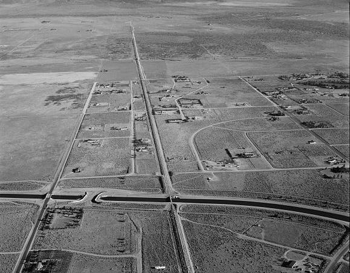

As the climate changes, Californians are faced time again with droughts and heatwaves that threaten the water supply. If we don’t make changes now, water can become a scarcity. Look around to get informed and find out what small changes you can make to help in the long run.

The LA Aqueduct, from Mammoth Lakes to the San Fernando Valley.